Exploratory Data Analysis
View as a slideshow.
Data
For today’s class let’s move to working with a slightly larger data set; we’ll use the nycflights13 package that contains information about every flight that departed from New York City in 2013. We’ll also use dplyr and ggplot2 today.
library(nycflights13)
library(dplyr)
library(ggplot2)Loading nycflights13 brought several tables into our current environment:
airlinesairportsplanesweatherflights
For today we’ll focus on the flights data set, which lists all domestic flights out of the New York area in 2013. Next week we’ll see how we can merge data from the other tables with flights. For now, you might want to have a look at the airlines table to see the full names that go with each of the airline codes.
Thinking about models
Over the last couple of weeks we’ve made a number of visualizations, making quantitative-categorical and quantitative-quantitative comparisons using histograms, density distributions, box plots, bar graphs and scatter plots. Embedded in each of these plots was an implicit question/hypothesis and mental model of how the comparison being visualized relates to that question/hypothesis.
A bit later on in the course we’ll explore sophisticated machine learning tools that we can use to build models based on data; for now, we’ll explore how far we can push simple data visualization as a modeling mechanism. It’s the best place to start when you’re first exploring a new data set.
Which airlines have the worst delays? (group_by, summarize & count)
What kind of model(s), and visualization(s), could address this question?
One option would be to visualize average departure delay by airline (a continuous-categorical comparison). dplyr has two functions that make it easy to do that: the group_by and the summarize functions. You’ll almost always want to use the two together. This code, using pipes %>%, groups the rows of flights together based on the carrier and then uses summarise and the mean function to calculate the average delay:
flights %>%
group_by(carrier) %>%
summarise(ave_delay = mean(dep_delay, na.rm = TRUE))## # A tibble: 16 x 2
## carrier ave_delay
## <chr> <dbl>
## 1 9E 16.7
## 2 AA 8.59
## 3 AS 5.80
## 4 B6 13.0
## 5 DL 9.26
## 6 EV 20.0
## 7 F9 20.2
## 8 FL 18.7
## 9 HA 4.90
## 10 MQ 10.6
## 11 OO 12.6
## 12 UA 12.1
## 13 US 3.78
## 14 VX 12.9
## 15 WN 17.7
## 16 YV 19.0Let’s unpack that! Use ?mean, ?summarise, and ?group_by to see the help pages for each.
Now, take a moment to test and see what happens if you leave out the na.rm = TRUE call. Why?
We can visualize our summary by piping the table into ggplot:
flights %>%
group_by(carrier) %>%
summarise(ave_delay = mean(dep_delay, na.rm = TRUE)) %>%
ggplot(aes(carrier, ave_delay)) + geom_bar(stat = 'identity')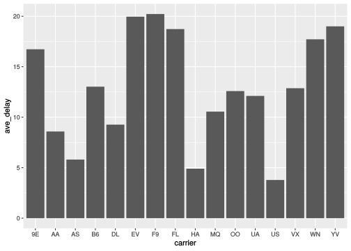
For anyone feeling stressed out about the pipe %>% this code does exactly the same thing, but saves intermediate values in variables:
flights_by_carrier <- group_by(flights, carrier)
carrier_ave_delay <- summarize(flights_by_carrier,
ave_delay = mean(dep_delay, na.rm = TRUE)
)
ggplot(carrier_ave_delay, aes(carrier, ave_delay)) +
geom_bar(stat = 'identity')For most of my example code I’ll by using the pipe because it’s shorter; but remember, you don’t have to!
Might be nice to arrange that categorical x-axis by the ave_delay value, no? Let’s do that to make it easy to see which airline has the worst average delay. Remember from last class that well use arrange to order the table and then mutate to change our character column of carrier names into an ordered factor:
flights %>%
group_by(carrier) %>%
summarise(ave_delay = mean(dep_delay, na.rm = TRUE)) %>%
arrange(ave_delay) %>%
mutate(carrier = factor(carrier, levels = carrier, ordered = TRUE)) %>%
ggplot(aes(carrier, ave_delay)) + geom_bar(stat = 'identity')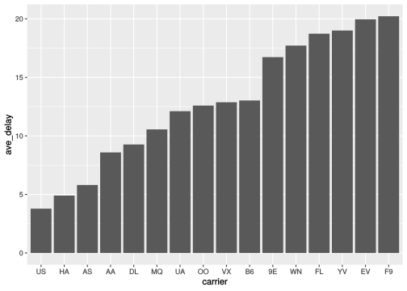
So Frontier (F9) and Express Jet (EV) aren’t looking great. But we all know that using mean to summarize a value can be dangerous, because it’s sensitive to outliers! We should always ask about the variation in the variables in our data sets, but it’s especially important to do so if we’re going to use averages to summarize them.
What is the distribution of departure delays by airline? Visualized as a density distribution:
flights %>%
ggplot(aes(dep_delay, fill = carrier)) + geom_density(alpha = 0.5)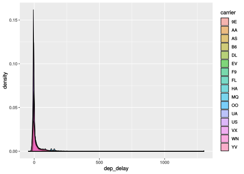
What did we learn? We have a small number HUGE outliers! That makes using mean possibly very misleading.
Variation in data like these that are very sparse is hard to visualize using density plots. Our two other options are geom_freqpoly and geom_density:
flights %>%
ggplot(aes(dep_delay, color = carrier)) + geom_freqpoly()## `stat_bin()` using `bins = 30`. Pick better value with `binwidth`.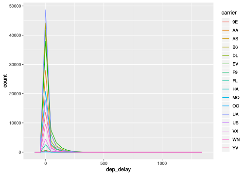
flights %>%
ggplot(aes(dep_delay)) + geom_histogram()## `stat_bin()` using `bins = 30`. Pick better value with `binwidth`.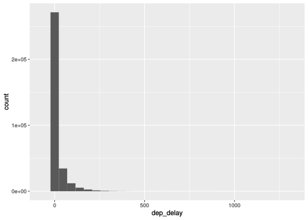
What would happen if we used median to average the delay time, instead of mean? This code is identical to that above, but we’ll use the median function to do our averaging.
flights %>%
group_by(carrier) %>%
summarise(ave_delay = median(dep_delay, na.rm = TRUE)) %>%
arrange(ave_delay) %>%
mutate(carrier = factor(carrier, levels = carrier, ordered = TRUE)) %>%
ggplot(aes(carrier, ave_delay)) + geom_bar(stat = 'identity')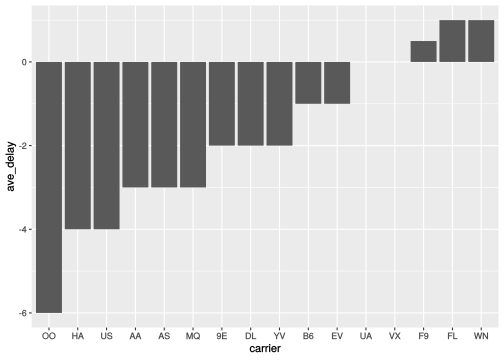
That tells a bit of a different story! Fly SkyWest and you’ll get to leave six minutes early. Seemingly small, simple differences in the tools you choose when exploring data can lead to visualizations that tell very different stories.
So how many flights were really delayed and how does that break down by airline? Being delayed more than an hour really sucks, so let’s use that as our cutoff:
flights %>%
filter(dep_delay > 120)## # A tibble: 9,723 x 19
## year month day dep_time sched_dep_time dep_delay arr_time
## <int> <int> <int> <int> <int> <dbl> <int>
## 1 2013 1 1 848 1835 853 1001
## 2 2013 1 1 957 733 144 1056
## 3 2013 1 1 1114 900 134 1447
## 4 2013 1 1 1540 1338 122 2020
## 5 2013 1 1 1815 1325 290 2120
## 6 2013 1 1 1842 1422 260 1958
## 7 2013 1 1 1856 1645 131 2212
## 8 2013 1 1 1934 1725 129 2126
## 9 2013 1 1 1938 1703 155 2109
## 10 2013 1 1 1942 1705 157 2124
## # … with 9,713 more rows, and 12 more variables: sched_arr_time <int>,
## # arr_delay <dbl>, carrier <chr>, flight <int>, tailnum <chr>,
## # origin <chr>, dest <chr>, air_time <dbl>, distance <dbl>, hour <dbl>,
## # minute <dbl>, time_hour <dttm>That’s a lot of flights! We can use the dplyr function named count to give us a summary of the number of rows of a that correspond to each group of a variable:
flights %>%
filter(dep_delay > 120) %>%
count(carrier)## # A tibble: 16 x 2
## carrier n
## <chr> <int>
## 1 9E 772
## 2 AA 720
## 3 AS 17
## 4 B6 1621
## 5 DL 1093
## 6 EV 2443
## 7 F9 34
## 8 FL 151
## 9 HA 5
## 10 MQ 607
## 11 OO 2
## 12 UA 1364
## 13 US 238
## 14 VX 181
## 15 WN 452
## 16 YV 23Note that count has created a column named n which contains the counts. We can ask it to sort that table for us:
flights %>%
filter(dep_delay > 120) %>%
count(carrier, sort = TRUE)## # A tibble: 16 x 2
## carrier n
## <chr> <int>
## 1 EV 2443
## 2 B6 1621
## 3 UA 1364
## 4 DL 1093
## 5 9E 772
## 6 AA 720
## 7 MQ 607
## 8 WN 452
## 9 US 238
## 10 VX 181
## 11 FL 151
## 12 F9 34
## 13 YV 23
## 14 AS 17
## 15 HA 5
## 16 OO 2And we can visualize it with a bar plot (note we don’t need an arrange because count has done that for us):
flights %>%
filter(dep_delay > 120) %>%
count(carrier, sort = TRUE) %>%
mutate(carrier = factor(carrier, levels = carrier, ordered = TRUE)) %>%
ggplot(aes(carrier, n)) + geom_bar(stat = 'identity')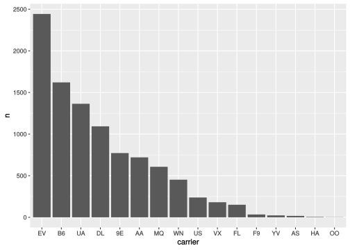
So now we’re starting to understand ExpressJet’s problem: they win at having a lot of very delayed flights.
Are flight delays worse at different New York airports? (covariation: categorical-continuous)
If you’re flying out of New York you might want to know which airport has the worst delays on average. One way to visualize covariation in categorical (airport) and continuous (delay) variable is with a box plot:
flights %>%
ggplot(aes(origin, dep_delay)) + geom_boxplot()## Warning: Removed 8255 rows containing non-finite values (stat_boxplot).
Again, those extreme outliers are blowing out our dynamic range. Let’s use a little scaling to get a better picture of the average delay:
flights %>%
ggplot(aes(origin, dep_delay)) +
geom_boxplot() +
ylim(0, 60)## Warning: Removed 218411 rows containing non-finite values (stat_boxplot).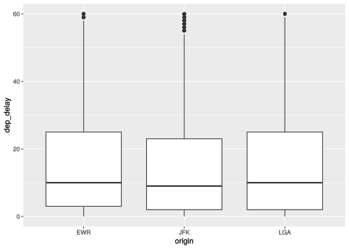
They look pretty similar. But how does that break down by carrier?.
flights %>%
ggplot(aes(origin, dep_delay, fill = carrier)) +
geom_boxplot() +
ylim(0, 60)## Warning: Removed 218411 rows containing non-finite values (stat_boxplot).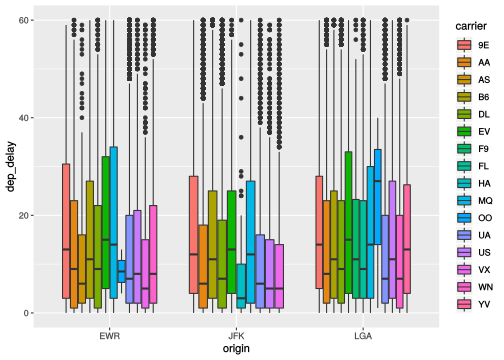
SkyWest is pretty good, but you might not want to fly with them if you’re at LaGuardia.
Does departure time affect flight delays? (covariation: continuous-continuous)
To explore covariation in two continuous (quantitative) variables, we can use the tried and true scatter plot:
flights %>%
ggplot(aes(sched_dep_time, dep_delay)) + geom_point()## Warning: Removed 8255 rows containing missing values (geom_point).
By carrier?
flights %>%
ggplot(aes(sched_dep_time, dep_delay, color = carrier)) +
geom_point(alpha = 0.3)## Warning: Removed 8255 rows containing missing values (geom_point).
How many flights leave each New York airport for each carrier? (covariation: categorical-categorical)
We can compare two categorical variables by plot counts using point size with geom_counts:
flights %>%
ggplot(aes(origin, carrier)) + geom_count()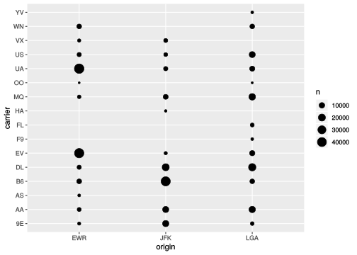
Notice how I chose to put the variable with more levels on the y-axis.
We can also make a heatmap using geom_tile. In this case, geom_tile doesn’t offer a way to calculate counts on it’s own, so we use the function count in our pipe:
flights %>%
count(origin, carrier) %>%
ggplot(aes(origin, carrier, fill = n)) + geom_tile()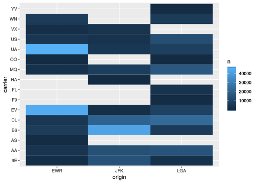
Heat maps are awesome! Let’s switch out our summary function to look at delays instead of counts:
flights %>%
group_by(origin, carrier) %>%
summarize(ave_delay = mean(dep_delay, na.rm = TRUE)) %>%
ggplot(aes(origin, carrier, fill = ave_delay)) +
geom_tile() +
scale_fill_continuous(low = "#31a354", high = "#e5f5e0")
I wonder if there’s a correlation between number of flights and average delay? Let’s combine what we reviewed in this section with the previous!
flights %>%
group_by(origin, carrier) %>%
summarize(n = n(),
ave_delay = mean(dep_delay, na.rm = TRUE)) %>%
ggplot(aes(n, ave_delay, color = origin)) + geom_point()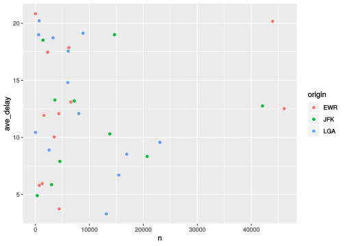
Make some models
For the rest of class today, use these tools, what you learned in the last class, and the plots featured in the reading to make some more models.
Include answers to these questions:
- Is there a relationship between origin/destination airport and delay time?
- How about for arrival times?
- Does the length of the flight affect delays on either end?
- Does time of day?